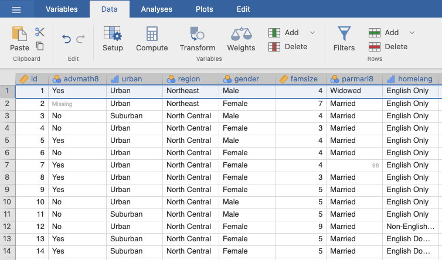
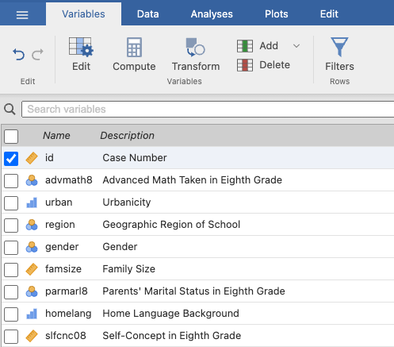
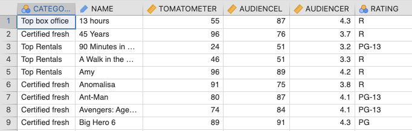
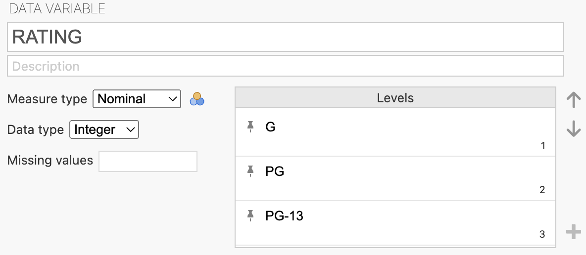
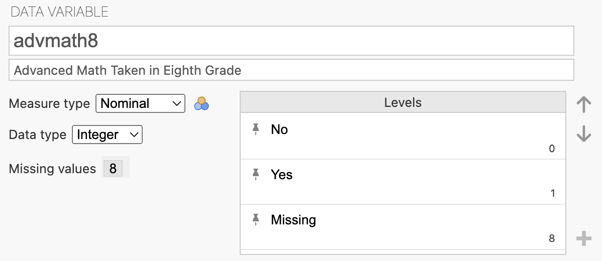

STAT117: Introduction to Statistics
Narrative Summary on selective slides are optional. They are drafted by AI based on annotated lecture slides from previous semesters. They are fully proofread and verified by the instructor.
For any (tabular) dataset, the first step is to look at:
Example (NELS.sav)


Another example (Combined Class Movies.sav)
Every dataset should be organized as a rectangular table: rows and columns. To familiarize yourself with a new dataset, first ask, “what does each row/column represent?”
In the NELS data, each row is a student (a subject), and each column is a piece of information recorded about that student (a variable), such as id, whether the student took advanced math in 8th grade (advmath8), the urbanicity of their school (urban), their geographic region, gender, and family size (famsize).
In the Combined Class Movies data, each row is a movie (a subject), and each column is a piece of information recorded about that movie (a variable), such as Category, Name, Rating, etc.
Jamovi provides two different display windows: The Data View looks like a spreadsheet of the actual data. The Variable View is a separate table listing all the variables and their descriptions.
As an example, the NELS data contains information for 500 students, with 48 variables recorded for each student. Hence, the data view shows 500 rows and 48 columns, and the variable view shows a list of 48 variables.A variable can have different values:
For the ease of analysis, non-numeric values are typically given a numeric coding


Variables can have different values (i.e., they “vary”): Northeast is NOT a variable; region is a variable.
Importantly, variables can take on very different kinds of values — some are simple counts or IDs (Subject ID, Age), some are ordered categories (movie RATING), and some are yes/no responses (took advanced math in 8th grade).
Variables can have different types, based on the property of their values. The type of a variable is also referred to as its measure type or level of measurement. There are three main types:
Nominal
Ordinal
Continuous (or Scale, or Numeric)
Nominal: categorical, order does not matter (e.g., region: North, South, East, West)
Ordinal: categorical, order does matter (e.g., GPA: ≥ 3.5, 2.5–3.5, ≤ 2.5)
Continuous: numeric values (e.g., actual GPA values)
We always need to consider the measure type of a variable before choosing the appropriate statistical analysis.
region (North, South, East, West). It would not make sense to say one region is “more” or “less” than another.Determine the measure type for each variable below.
famsize); no codingschtyp8) (1 = “Public”, 2 = “Private, Religious”, 3 = “Private, Non-Religious”)absent12) (0 = “Never”, 1 = “1-2 Times”, 2 = “3-6 Times”, 3 = “7-9 Times”, 4 = “10-15 Times”, 5 = “Over 15 Times”)achmat10); no codingcomputer) (0 = “No”, 1 = “Yes”)tcherint) (1 = “Strongly Agree”, 2 = “Agree”, 3 = “Disagree”, 4 = “Strongly Disagree”)edexpect) (1 = “Less than College Degree”, 2 = “Bachelor’s Degree”, 3 = “Master’s Degree”, 4 = “Ph.D., MD, JD, etc.”)SES); no codingurban) (1 = “Urban”, 2 = “Suburban”, 3 = “Rural”)A dichotomous variable is one with only two possible categories or values (e.g., “yes/no;” “domestic/international”). This is not an option in Jamovi explicitly; it is typically labeled as nominal.
A Likert Scale variable represents levels of agreement or feelings about something (e.g., Strongly Agree → Strongly Disagree); you should treat it as a continuous variable.